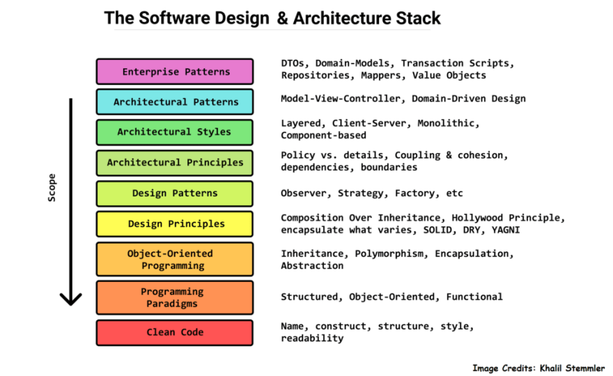

When we think of chess we think about strategies. A good strategy will dictate weather you come out as the victor or not. These strategies can be used many time and can be taught to someone else because the basis of a strategy is just a set of moves or plays that can be used time and time again. Design patterns in programming are essentially the same as they are unique strategies for programmers to use to solve unique but common programming problems and can be implemented in any programming language.
Imagine design patterns as unique chess strategies, each one a proven tactic to address specific coding challenges. The Singleton pattern, like a seasoned chess player securing a key square, ensures that only one instance of a class occupies the board at any given time. It’s the positional advantage that prevents duplication, much like a chess master controlling a crucial square to dominate the game.
The Observer pattern, akin to coordinated piece movements, orchestrates a synchronized response to changes. Just as chess pieces collaborate to control the board, objects subscribe and react to alterations in data, creating a harmonious interaction reminiscent of a well-coordinated chess strategy.
One such pattern that I’ve used is the Prototype pattern in JavaScript. This has allowed me to create an array of objects that inherits properties and methods from a prototype object. Another design pattern I am currently using in the final project is MVC which stands for Model, View, and Controller. For the final project, my group and I, are creating a web application for UH students to sell their things. It’s essentially a craigslist or Facebook marketplace but for UH students only. So we are using MongoDB for the Model, Meteor for the View, and JavaScript for the Controller.
In conclusion, we can think of design patterns like unique strategies used in chess. The Singleton pattern ensures only one instance of a class occupies the board at a time. The Observer pattern reacts to when something happens in the program and react to it such as when the opponent makes a move and you have to calculate what you’re next move is carefully. Personally I can recall using the Prototype pattern to give my objects in an array to inherit properties and methods from the prototype object. Then currently for the final project we are implementing the MVS pattern where we are using MongoDB for the Model, Meteor for the View, and JavaScript for the Controller.